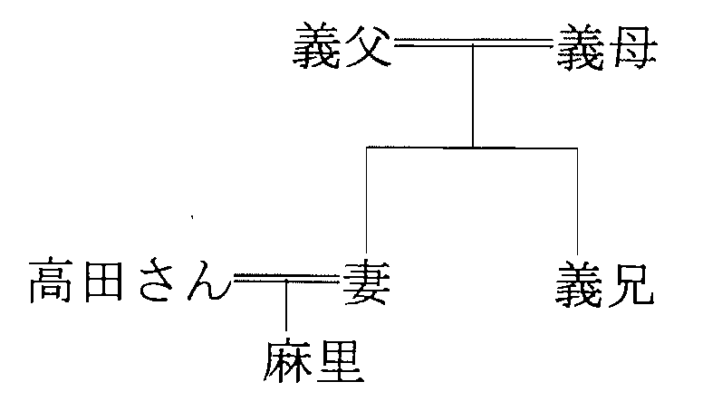
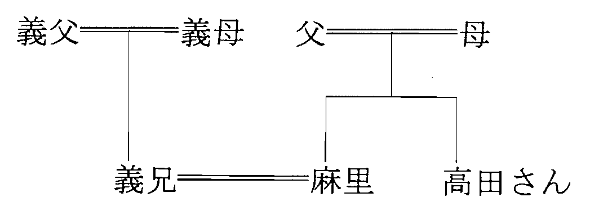
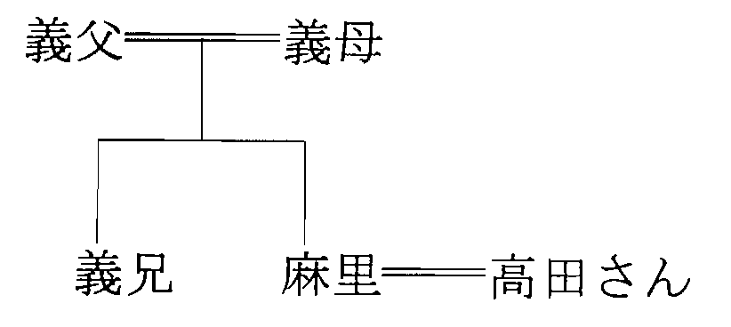
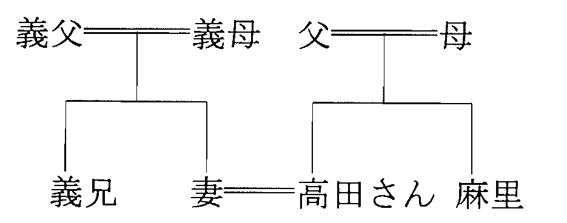

1級 · December 1997
Uncertainty index: 590 · 9 differences · 0 unresolved · 2 provisional fixes
Evidence base 500 + source concerns 90 = 590. Concerns are uncapped; browsing order uses evidence tier before concern points.
This is an editorial evidence assessment, not a probability, an error rate or a practice score.
Assessment evidence and original source scores
{
"unit": "N1_1997",
"sample": false,
"year": 1997,
"month": 12,
"evidence_base": 500,
"evidence_tier": 2,
"concern_points": 90,
"index": 590,
"concern_counts": {
"metadata_flags": 0,
"missing_units": 9,
"major_defects": 0,
"minor_defects": 0,
"uncertain_fields": 0
},
"principal_history": {
"unit": "N1_1997",
"level": "N1",
"historical_level": "1級",
"year": 1997,
"month": 12,
"sitting_attribution": {
"basis": "Inspected source section covers establish the year and old level. Official JLPT 2011 guide physical 2 states that through 2008 the test was held once annually in December. Month is attributed from that schedule, not from the storage ID or scan container.",
"source_url": "https://www.jlpt.jp/reference/pdf/guide2011.pdf",
"locator": "Physical 2 (printed 01-02), 日本語能力試験とは? footnote",
"access": "Official PDF text retrieved by web tool on 23 October 2026; local download was socket-restricted, so no local-original hash is claimed.",
"source_cover_pages": [
281,
306
],
"source_sha256": "8560bf8ef92b4e2d58559b3e14882b76d3307586f5d55b0e7fa33cc2f5fa931f"
},
"content_kind": "exam",
"principal_path": "src/CodexDownloads/UserApprovedReferenceScans/日本語能力1991～1999年試験問題集1級.pdf",
"principal_sha256": "8560bf8ef92b4e2d58559b3e14882b76d3307586f5d55b0e7fa33cc2f5fa931f",
"initial_tier": "unranked",
"written_physical_pages": "282-291,307-322,327",
"review_status": "complete_written_review",
"provenance_status": "unverified",
"provenance_points": 100,
"provenance_evidence": "Exact same volume as reviewedN1_1998: title/CIP,publisher,preface permissions and reproduction claims directly inspected with the source hash bound. CurrentTOC14,covers281/306 and implementation328 establish sitting identity. Printed provenance statements and user study approval do not authenticate these bytes or establish issuer custody.",
"scope_note": "All25 available primary question pages282–291,307–309,311–322, both covers281/306, omission310 and separate written keys326upper/327 directly read. Same-volume identity1–5 is reused from hash-identical N1_1998; current TOC14 and implementation328 establish1997 December7. All121 questions,16 semantic contexts,17passage blocks and3complete examples reconstructed. ReadingII is absent in the principal: one instruction,one passage and seven questions,each counted once. The indexed secondary534–536 supplies the full section; its written key542 and explanation551 agree internally. Neither that agreement nor the byte-identical principal copy establishes independent custody. All question weights and keys checked; raw totals90/175 convert to100/200 with printed rounding. Listening292–305/scripts323–325 excluded.",
"metadata_flags": 0,
"missing_units": 9,
"major_defects": 0,
"minor_defects": 0,
"uncertain_fields": 0,
"score_evidence": [
{
"id": "N1_1997-missing-II-01",
"kind": "missing_units",
"item_id": "reading-s02",
"field": "/heading",
"locator": "Physical310 and327: completeII omitted including its separate answers",
"evidence": "Count one absent instruction once. Its options,key and secondary wording repairs are not additional missing units. Recovery does not remove the principal absence."
},
{
"id": "N1_1997-missing-II-02",
"kind": "missing_units",
"item_id": "reading-b002",
"field": "/content",
"locator": "Physical310 and327: completeII omitted including its separate answers",
"evidence": "Count one absent passage/context once. Its options,key and secondary wording repairs are not additional missing units. Recovery does not remove the principal absence."
},
{
"id": "N1_1997-missing-II-03",
"kind": "missing_units",
"item_id": "reading-q008",
"field": "",
"locator": "Physical310 and327: completeII omitted including its separate answers",
"evidence": "Count one absent scored question once. Its options,key and secondary wording repairs are not additional missing units. Recovery does not remove the principal absence."
},
{
"id": "N1_1997-missing-II-04",
"kind": "missing_units",
"item_id": "reading-q009",
"field": "",
"locator": "Physical310 and327: completeII omitted including its separate answers",
"evidence": "Count one absent scored question once. Its options,key and secondary wording repairs are not additional missing units. Recovery does not remove the principal absence."
},
{
"id": "N1_1997-missing-II-05",
"kind": "missing_units",
"item_id": "reading-q010",
"field": "",
"locator": "Physical310 and327: completeII omitted including its separate answers",
"evidence": "Count one absent scored question once. Its options,key and secondary wording repairs are not additional missing units. Recovery does not remove the principal absence."
},
{
"id": "N1_1997-missing-II-06",
"kind": "missing_units",
"item_id": "reading-q011",
"field": "",
"locator": "Physical310 and327: completeII omitted including its separate answers",
"evidence": "Count one absent scored question once. Its options,key and secondary wording repairs are not additional missing units. Recovery does not remove the principal absence."
},
{
"id": "N1_1997-missing-II-07",
"kind": "missing_units",
"item_id": "reading-q012",
"field": "",
"locator": "Physical310 and327: completeII omitted including its separate answers",
"evidence": "Count one absent scored question once. Its options,key and secondary wording repairs are not additional missing units. Recovery does not remove the principal absence."
},
{
"id": "N1_1997-missing-II-08",
"kind": "missing_units",
"item_id": "reading-q013",
"field": "",
"locator": "Physical310 and327: completeII omitted including its separate answers",
"evidence": "Count one absent scored question once. Its options,key and secondary wording repairs are not additional missing units. Recovery does not remove the principal absence."
},
{
"id": "N1_1997-missing-II-09",
"kind": "missing_units",
"item_id": "reading-q014",
"field": "",
"locator": "Physical310 and327: completeII omitted including its separate answers",
"evidence": "Count one absent scored question once. Its options,key and secondary wording repairs are not additional missing units. Recovery does not remove the principal absence."
}
],
"method_version": 1,
"review_date": "2026-10-26",
"uncertainty_index": 190
},
"evidence": [
{
"kind": "user_approved_reference_scan",
"binding": {
"path": "preprocess/user_approved_reference_scans.md",
"sha256": "c0fc4d24494a9569dd539d237018014213045d6224ae9035fa282ab610be0384"
},
"reference": {
"reference_id": "RC03_L1",
"source_path": "src/CodexDownloads/UserApprovedReferenceScans/日本語能力1991～1999年試験問題集1級.pdf",
"source_sha256": "8560bf8ef92b4e2d58559b3e14882b76d3307586f5d55b0e7fa33cc2f5fa931f",
"approved_physical_pages": [
15,
16,
17,
18,
19,
20,
21,
22,
23,
24,
25,
26,
27,
28,
29,
30,
31,
32,
33,
34,
35,
36,
37,
38,
39,
40,
41,
42,
43,
44,
45,
53,
54,
55,
56,
57,
58,
59,
60,
62,
63,
64,
65,
66,
67,
68,
69,
70,
71,
72,
73,
74,
75,
76,
77,
78,
79,
80,
81,
82,
83,
84,
85,
86,
94,
95,
96,
97,
98,
99,
100,
101,
102,
103,
104,
105,
106,
107,
108,
109,
110,
111,
112,
113,
114,
115,
116,
117,
118,
119,
120,
121,
122,
123,
124,
125,
126,
127,
128,
129,
130,
131,
139,
140,
141,
142,
143,
144,
145,
146,
147,
148,
149,
150,
151,
152,
153,
154,
155,
156,
157,
158,
159,
160,
161,
162,
163,
164,
165,
166,
167,
168,
169,
170,
171,
172,
173,
174,
175,
176,
185,
186,
187,
188,
189,
190,
191,
192,
193,
194,
195,
196,
197,
198,
199,
200,
201,
202,
203,
204,
205,
206,
207,
208,
209,
210,
211,
212,
213,
214,
215,
216,
217,
218,
219,
220,
221,
222,
223,
232,
233,
234,
235,
236,
237,
238,
239,
240,
241,
242,
243,
244,
245,
246,
247,
248,
249,
250,
251,
252,
253,
254,
255,
256,
257,
258,
259,
260,
261,
262,
263,
264,
265,
266,
267,
268,
269,
270,
271,
272,
281,
282,
283,
284,
285,
286,
287,
288,
289,
290,
291,
292,
293,
294,
295,
296,
297,
298,
299,
300,
301,
302,
303,
304,
305,
306,
307,
308,
309,
310,
311,
312,
313,
314,
315,
316,
317,
318,
319,
320,
321,
322,
331,
332,
333,
334,
335,
336,
337,
338,
339,
340,
341,
342,
343,
344,
345,
346,
347,
348,
349,
350,
351,
352,
353,
354,
355,
356,
357,
358,
359,
360,
361,
362,
363,
364,
365,
366,
367,
368,
369,
370,
371,
372,
373,
374,
383,
384,
385,
386,
387,
388,
389,
390,
391,
392,
393,
394,
395,
396,
397,
398,
399,
400,
401,
402,
403,
404,
405,
406,
407,
408,
409,
410,
411,
412,
413,
414,
415,
416,
417,
418,
419,
420,
421,
422,
423,
424,
425,
426,
427,
428,
429,
430,
431
],
"full_pdf_pages": 447,
"approval_registry": {
"path": "preprocess/user_approved_reference_scans.md",
"sha256": "c0fc4d24494a9569dd539d237018014213045d6224ae9035fa282ab610be0384"
},
"scope": "Approved question-page appearance only; registry exclusions apply. No custody, key-correctness, completeness or original-sheet-size claim."
},
"scope": "Exact selected source and approved question pages only; approval does not authenticate issuer custody or remove source concerns."
}
]
}reading-s02
Open in paper →Current editorial context
Principal
No alternative recorded
Editorial
問題Ⅱ 次の文章を読んで、後の問いに答えなさい。答えは、1・2・3・4から最も適当なものを一つ選びなさい。
The primary explicitly withholdsII. Recover the complete field from directly read indexed secondary534–536,with seven keys separately checked in written region542 and explanation551. NeighboringI/III establish exam alignment. No conflicting reading found for this recovered field; exact original appearance/custody remains unverified.
Source ↗ Physical310 collectionfolio296 omission notice; separateII key omitted on327Full published record · principal_differences-N1_1997-H23-D001
{
"format": "principal_difference_v1",
"difference_id": "N1_1997-H23-D001",
"unit": "N1_1997",
"item_id": "reading-s02",
"field": "/heading",
"current_value": "問題Ⅱ 次の文章を読んで、後の問いに答えなさい。答えは、1・2・3・4から最も適当なものを一つ選びなさい。",
"categories": [
"missing_printed_content"
],
"principal": {
"source_label": "1997 Japanese-Language Proficiency Test, old Level1 — 1991–1999 collected questions volume",
"sha256": "8560bf8ef92b4e2d58559b3e14882b76d3307586f5d55b0e7fa33cc2f5fa931f",
"physical_pages": [
310,
327
],
"locator": "Physical310 collectionfolio296 omission notice; separateII key omitted on327",
"reading_status": "absent",
"reading": null
},
"editorial_reading": "問題Ⅱ 次の文章を読んで、後の問いに答えなさい。答えは、1・2・3・4から最も適当なものを一つ選びなさい。",
"comparison_confidence": "high",
"disposition": "supported_repair",
"rationale": "The primary explicitly withholdsII. Recover the complete field from directly read indexed secondary534–536,with seven keys separately checked in written region542 and explanation551. NeighboringI/III establish exam alignment. No conflicting reading found for this recovered field; exact original appearance/custody remains unverified.",
"linked_case_ids": []
}reading-b002
Open in paper →Current editorial context
タクシーの車窓から久しぶりの町を眺めながら、高田さんは五年前を思い出していた。
その時は新婚三ヵ月目で、奥さんの里帰りに随いてきた。奥さんは両親や兄妹と会うのが楽しみで浮き浮きしていた。タクシーが街並みを通り抜けるとき、あそこが同級生の家、向こうに見えるのが従姉が務めている郵便局と、しきりにはしゃいだ声を上げた。
その半年前にも、両親に結婚の承諾をもらうために訪れていたが、二人とも勤めの関係があって、東京へトンボ返りしなければならなかった。だから、その里帰りのときが、奥さんの故郷をゆっくり見た最初の機会となった。
だが、その後は一度も来ていない。あまりにも重い出来事ばかりが続いたために、長い間ご無沙汰を続けてきたのである。
タクシーは町筋を通り過ぎたあと、さらに十五分ほど走り、山の中腹にある家の前で停まった。高田さんは道路際に降り立ち、家の周りに広がる林を見渡した。東北の三月にしては雪もなく、穏やかな天候だったが、さすがに早春の冷気が肺の中まで染み透ってきた。
「ようきたねえ」
大柄の男が玄関にあらわれ、懐かしげな目を向けてきた。高田さんより二つ年上の義兄で、地元の農業高校で教鞭をとっている。（中略）
「ちょうど学校が春休みでね。いいときに来てくれたな。……今夜は久しぶりに飲もうか」と親しみを込めて笑いかけた。
石油ストーブで温められた座敷へ通され、高田さんは奥さんの両親と向かい合った。
挨拶を終えて、近況などを話したあと、しばらく口をつぐんだ。大事な話を切り出そうと思いながら、なかなか言葉が出てこないのだ。相手の顔さえまともに見られなかった。
座卓の向こう側で穏やかな微笑みを浮かべている老夫婦は、かつては高田さんを実の息子のように思ってくれた人たちである。あるいは現在でも、そう見ているのかもしれない。
躊躇ったまま、うつむいていると、
「あんた、再婚するんじゃないのかね？」
ふいに義父のほうが先に口を開いた。
高田さんは思わず目を上げた。義父の微笑みに変化はなかった。隣にいる義母は淋しそうな表情になっている。ひたと見つめてくる目が、亡くなった奥さんにそっくりだった。
「じつは、……そのことで」
言ってしまって、高田さんはほっとした。
二人に会う前から、どう伝えたらいいかと思い悩んでいたのだ。言い出すきっかけを作ってくれた義父に感謝しなければならない。
「それは、おめでとう」
義父はゆったりとうなずいた。
「麻里がなくなってからというもの、いつかこの日が来るに違いないと、……じつは家内とも話しておったんだ」
愛しい娘を失った父親が悲しみを抑えて、祝福までしてくれている。高田さんは黙って頭を垂れるほかなかった。
（内海隆一郎「白い木」『PHP』586号による）
（注1）里帰り：女性が結婚後、実家を訪れること
（注2）浮き浮きする：うれしくてじっとしていられないような気持ちになる
（注3）はしゃぐ：うれしくて騒ぐ
（注4）トンボ帰り：行って、すぐに帰ること
（注5）よう：よく
（注6）義（兄）：義理の（兄）、結婚相手の（兄）
（注7）教鞭をとる：学校で教える
（注8）口をつぐむ：だまる
（注9）まともに：正面からまっすぐに
Alternative
…の町を眺めながら、高田さんは五年前を思い出していた。</p><p>その時は新婚三ヵ月目で、奥さんの<span data-note-label=\"（注1）\">里帰り</span>随いてきた。奥さんは両親や兄妹と会うのが楽しみで<span data-note-label=\"（注2）\">浮き浮き</span>していた。タクシーが街並みを通り抜けるとき、あそこが同級生の家、向こうに見えるのが従姉が務めている郵便局と、しきりに<span data-note-…
Editorial
…の町を眺めながら、高田さんは五年前を思い出していた。</p><p>その時は新婚三ヵ月目で、奥さんの<span data-note-label=\"（注1）\">里帰り</span>に随いてきた。奥さんは両親や兄妹と会うのが楽しみで<span data-note-label=\"（注2）\">浮き浮き</span>していた。タクシーが街並みを通り抜けるとき、あそこが同級生の家、向こうに見えるのが従姉が務めている郵便局と、しきりに<span data-note-…
Both small changes restore ordinary syntax/lexical identity without changing the story, relationships or answer contrasts. Retain従姉が務めている,bodyトンボ返り/noteトンボ帰り,兄妹 and淋しそう literally. The primary omission prevents claiming a verified transcription ofII.
Remaining uncertainty
An originalII question page or independently reliable full transcription is needed to verify these two exact historical spans.
- 1997 Japanese-Language Proficiency Test, old Level1 — 1991–1999 collected questions volume · ReadingII publisher omission and separately omitted answer row
Physical310 replacesII with a permission notice. Primary327 explicitly withholds all sevenII answers. Neighboring readingI/III align with the recovered secondary.
- 1995–2009.12 日本语能力测试真题详解 N1, 1997 section · Complete recoveredII, written-key region542 and explanation551
All seven questions and complete passage/notes are present. Written key4,2,3,2,1,4,3 agrees with passage interpretation and the explanation.
- 1995–2009.12 日本语能力测试真题详解 N1, 1997 section · Paragraph2 opening and note3
Secondary534 visibly prints奥さんの里帰り随いてきた and laterはしゃいだ声を上げた. Note3 at535 printsはやぐ：うれしくて騒ぐ. The translation supports accompaniment and excited speech but does not establish the original Japanese wording.
Full published record · unresolved_cases-N1_1997-H23-001
{
"case_id": "N1_1997-H23-001",
"unit": "N1_1997",
"item_id": "reading-b002",
"field": "",
"status": "provisional_fix",
"confidence": "medium",
"decision_basis": "combined",
"before": null,
"current_value": {
"id": "reading-b002",
"type": "passage",
"content": {
"html": "<p>タクシーの車窓から久しぶりの町を眺めながら、高田さんは五年前を思い出していた。</p><p>その時は新婚三ヵ月目で、奥さんの<span data-note-label=\"（注1）\">里帰り</span>に随いてきた。奥さんは両親や兄妹と会うのが楽しみで<span data-note-label=\"（注2）\">浮き浮き</span>していた。タクシーが街並みを通り抜けるとき、あそこが同級生の家、向こうに見えるのが従姉が務めている郵便局と、しきりに<span data-note-label=\"（注3）\">はしゃいだ</span>声を上げた。</p><p>その半年前にも、両親に結婚の承諾をもらうために訪れていたが、二人とも勤めの関係があって、東京へ<span data-note-label=\"（注4）\">トンボ返り</span>しなければならなかった。だから、その里帰りのときが、奥さんの故郷をゆっくり見た最初の機会となった。</p><p>だが、その後は一度も来ていない。<u data-reference-label=\"①\">あまりにも重い出来事</u>ばかりが続いたために、長い間ご無沙汰を続けてきたのである。</p><p>タクシーは町筋を通り過ぎたあと、さらに十五分ほど走り、山の中腹にある家の前で停まった。高田さんは道路際に降り立ち、家の周りに広がる林を見渡した。東北の三月にしては雪もなく、穏やかな天候だったが、さすがに早春の冷気が肺の中まで染み透ってきた。</p><p>「<span data-note-label=\"（注5）\">よう</span>きたねえ」</p><p>大柄の男が玄関にあらわれ、懐かしげな目を向けてきた。高田さんより二つ年上の<span data-note-label=\"（注6）\">義兄</span>で、地元の農業高校で<span data-note-label=\"（注7）\">教鞭をとっている</span>。（中略）</p><p>「ちょうど学校が春休みでね。いいときに来てくれたな。……今夜は久しぶりに飲もうか」と<u data-reference-label=\"②\">親しみを込めて笑いかけた</u>。</p><p>石油ストーブで温められた座敷へ通され、高田さんは奥さんの両親と向かい合った。</p><p>挨拶を終えて、近況などを話したあと、しばらく<span data-note-label=\"（注8）\">口をつぐんだ</span>。大事な話を切り出そうと思いながら、なかなか言葉が出てこないのだ。<u data-reference-label=\"③\">相手の顔さえ<span data-note-label=\"（注9）\">まともに</span>見られなかった</u>。</p><p>座卓の向こう側で穏やかな微笑みを浮かべている老夫婦は、かつては高田さんを実の息子のように思ってくれた人たちである。あるいは現在でも、そう見ているのかもしれない。</p><p><ruby>躊躇<rt>ためら</rt></ruby>ったまま、うつむいていると、</p><p>「あんた、再婚するんじゃないのかね？」</p><p>ふいに義父のほうが先に口を開いた。</p><p>高田さんは<u data-reference-label=\"④\">思わず目を上げた</u>。義父の微笑みに変化はなかった。隣にいる義母は淋しそうな表情になっている。ひたと見つめてくる目が、亡くなった奥さんにそっくりだった。</p><p>「じつは、……そのことで」</p><p>言ってしまって、高田さんはほっとした。</p><p>二人に会う前から、どう伝えたらいいかと思い悩んでいたのだ。言い出すきっかけを作ってくれた義父に感謝しなければならない。</p><p>「それは、おめでとう」</p><p>義父はゆったりとうなずいた。</p><p>「麻里がなくなってからというもの、いつか<u data-reference-label=\"⑤\">この日</u>が来るに違いないと、……じつは家内とも話しておったんだ」</p><p>愛しい娘を失った父親が悲しみを抑えて、祝福までしてくれている。高田さんは黙って頭を垂れるほかなかった。</p><p>（内海隆一郎「白い木」『PHP』586号による）</p><p>（注1）里帰り：女性が結婚後、実家を訪れること</p><p>（注2）浮き浮きする：うれしくてじっとしていられないような気持ちになる</p><p>（注3）はしゃぐ：うれしくて騒ぐ</p><p>（注4）トンボ帰り：行って、すぐに帰ること</p><p>（注5）よう：よく</p><p>（注6）義（兄）：義理の（兄）、結婚相手の（兄）</p><p>（注7）教鞭をとる：学校で教える</p><p>（注8）口をつぐむ：だまる</p><p>（注9）まともに：正面からまっすぐに</p>"
}
},
"context": "Initial complete passage creation from an absent editorial item. Two disputed spans only: secondary534里帰り随いて→里帰りに随いて and secondary535note3はやぐ→はしゃぐ.",
"alternatives": [
{
"value": {
"id": "reading-b002",
"type": "passage",
"content": {
"html": "<p>タクシーの車窓から久しぶりの町を眺めながら、高田さんは五年前を思い出していた。</p><p>その時は新婚三ヵ月目で、奥さんの<span data-note-label=\"（注1）\">里帰り</span>随いてきた。奥さんは両親や兄妹と会うのが楽しみで<span data-note-label=\"（注2）\">浮き浮き</span>していた。タクシーが街並みを通り抜けるとき、あそこが同級生の家、向こうに見えるのが従姉が務めている郵便局と、しきりに<span data-note-label=\"（注3）\">はしゃいだ</span>声を上げた。</p><p>その半年前にも、両親に結婚の承諾をもらうために訪れていたが、二人とも勤めの関係があって、東京へ<span data-note-label=\"（注4）\">トンボ返り</span>しなければならなかった。だから、その里帰りのときが、奥さんの故郷をゆっくり見た最初の機会となった。</p><p>だが、その後は一度も来ていない。<u data-reference-label=\"①\">あまりにも重い出来事</u>ばかりが続いたために、長い間ご無沙汰を続けてきたのである。</p><p>タクシーは町筋を通り過ぎたあと、さらに十五分ほど走り、山の中腹にある家の前で停まった。高田さんは道路際に降り立ち、家の周りに広がる林を見渡した。東北の三月にしては雪もなく、穏やかな天候だったが、さすがに早春の冷気が肺の中まで染み透ってきた。</p><p>「<span data-note-label=\"（注5）\">よう</span>きたねえ」</p><p>大柄の男が玄関にあらわれ、懐かしげな目を向けてきた。高田さんより二つ年上の<span data-note-label=\"（注6）\">義兄</span>で、地元の農業高校で<span data-note-label=\"（注7）\">教鞭をとっている</span>。（中略）</p><p>「ちょうど学校が春休みでね。いいときに来てくれたな。……今夜は久しぶりに飲もうか」と<u data-reference-label=\"②\">親しみを込めて笑いかけた</u>。</p><p>石油ストーブで温められた座敷へ通され、高田さんは奥さんの両親と向かい合った。</p><p>挨拶を終えて、近況などを話したあと、しばらく<span data-note-label=\"（注8）\">口をつぐんだ</span>。大事な話を切り出そうと思いながら、なかなか言葉が出てこないのだ。<u data-reference-label=\"③\">相手の顔さえ<span data-note-label=\"（注9）\">まともに</span>見られなかった</u>。</p><p>座卓の向こう側で穏やかな微笑みを浮かべている老夫婦は、かつては高田さんを実の息子のように思ってくれた人たちである。あるいは現在でも、そう見ているのかもしれない。</p><p><ruby>躊躇<rt>ためら</rt></ruby>ったまま、うつむいていると、</p><p>「あんた、再婚するんじゃないのかね？」</p><p>ふいに義父のほうが先に口を開いた。</p><p>高田さんは<u data-reference-label=\"④\">思わず目を上げた</u>。義父の微笑みに変化はなかった。隣にいる義母は淋しそうな表情になっている。ひたと見つめてくる目が、亡くなった奥さんにそっくりだった。</p><p>「じつは、……そのことで」</p><p>言ってしまって、高田さんはほっとした。</p><p>二人に会う前から、どう伝えたらいいかと思い悩んでいたのだ。言い出すきっかけを作ってくれた義父に感謝しなければならない。</p><p>「それは、おめでとう」</p><p>義父はゆったりとうなずいた。</p><p>「麻里がなくなってからというもの、いつか<u data-reference-label=\"⑤\">この日</u>が来るに違いないと、……じつは家内とも話しておったんだ」</p><p>愛しい娘を失った父親が悲しみを抑えて、祝福までしてくれている。高田さんは黙って頭を垂れるほかなかった。</p><p>（内海隆一郎「白い木」『PHP』586号による）</p><p>（注1）里帰り：女性が結婚後、実家を訪れること</p><p>（注2）浮き浮きする：うれしくてじっとしていられないような気持ちになる</p><p>（注3）はやぐ：うれしくて騒ぐ</p><p>（注4）トンボ帰り：行って、すぐに帰ること</p><p>（注5）よう：よく</p><p>（注6）義（兄）：義理の（兄）、結婚相手の（兄）</p><p>（注7）教鞭をとる：学校で教える</p><p>（注8）口をつぐむ：だまる</p><p>（注9）まともに：正面からまっすぐに</p>"
}
},
"assessment": "Literal secondary wording preserves the missing case particle and the malformed note headword. The rest of the complete passage is identical."
},
{
"value": {
"id": "reading-b002",
"type": "passage",
"content": {
"html": "<p>タクシーの車窓から久しぶりの町を眺めながら、高田さんは五年前を思い出していた。</p><p>その時は新婚三ヵ月目で、奥さんの<span data-note-label=\"（注1）\">里帰り</span>に随いてきた。奥さんは両親や兄妹と会うのが楽しみで<span data-note-label=\"（注2）\">浮き浮き</span>していた。タクシーが街並みを通り抜けるとき、あそこが同級生の家、向こうに見えるのが従姉が務めている郵便局と、しきりに<span data-note-label=\"（注3）\">はしゃいだ</span>声を上げた。</p><p>その半年前にも、両親に結婚の承諾をもらうために訪れていたが、二人とも勤めの関係があって、東京へ<span data-note-label=\"（注4）\">トンボ返り</span>しなければならなかった。だから、その里帰りのときが、奥さんの故郷をゆっくり見た最初の機会となった。</p><p>だが、その後は一度も来ていない。<u data-reference-label=\"①\">あまりにも重い出来事</u>ばかりが続いたために、長い間ご無沙汰を続けてきたのである。</p><p>タクシーは町筋を通り過ぎたあと、さらに十五分ほど走り、山の中腹にある家の前で停まった。高田さんは道路際に降り立ち、家の周りに広がる林を見渡した。東北の三月にしては雪もなく、穏やかな天候だったが、さすがに早春の冷気が肺の中まで染み透ってきた。</p><p>「<span data-note-label=\"（注5）\">よう</span>きたねえ」</p><p>大柄の男が玄関にあらわれ、懐かしげな目を向けてきた。高田さんより二つ年上の<span data-note-label=\"（注6）\">義兄</span>で、地元の農業高校で<span data-note-label=\"（注7）\">教鞭をとっている</span>。（中略）</p><p>「ちょうど学校が春休みでね。いいときに来てくれたな。……今夜は久しぶりに飲もうか」と<u data-reference-label=\"②\">親しみを込めて笑いかけた</u>。</p><p>石油ストーブで温められた座敷へ通され、高田さんは奥さんの両親と向かい合った。</p><p>挨拶を終えて、近況などを話したあと、しばらく<span data-note-label=\"（注8）\">口をつぐんだ</span>。大事な話を切り出そうと思いながら、なかなか言葉が出てこないのだ。<u data-reference-label=\"③\">相手の顔さえ<span data-note-label=\"（注9）\">まともに</span>見られなかった</u>。</p><p>座卓の向こう側で穏やかな微笑みを浮かべている老夫婦は、かつては高田さんを実の息子のように思ってくれた人たちである。あるいは現在でも、そう見ているのかもしれない。</p><p><ruby>躊躇<rt>ためら</rt></ruby>ったまま、うつむいていると、</p><p>「あんた、再婚するんじゃないのかね？」</p><p>ふいに義父のほうが先に口を開いた。</p><p>高田さんは<u data-reference-label=\"④\">思わず目を上げた</u>。義父の微笑みに変化はなかった。隣にいる義母は淋しそうな表情になっている。ひたと見つめてくる目が、亡くなった奥さんにそっくりだった。</p><p>「じつは、……そのことで」</p><p>言ってしまって、高田さんはほっとした。</p><p>二人に会う前から、どう伝えたらいいかと思い悩んでいたのだ。言い出すきっかけを作ってくれた義父に感謝しなければならない。</p><p>「それは、おめでとう」</p><p>義父はゆったりとうなずいた。</p><p>「麻里がなくなってからというもの、いつか<u data-reference-label=\"⑤\">この日</u>が来るに違いないと、……じつは家内とも話しておったんだ」</p><p>愛しい娘を失った父親が悲しみを抑えて、祝福までしてくれている。高田さんは黙って頭を垂れるほかなかった。</p><p>（内海隆一郎「白い木」『PHP』586号による）</p><p>（注1）里帰り：女性が結婚後、実家を訪れること</p><p>（注2）浮き浮きする：うれしくてじっとしていられないような気持ちになる</p><p>（注3）はしゃぐ：うれしくて騒ぐ</p><p>（注4）トンボ帰り：行って、すぐに帰ること</p><p>（注5）よう：よく</p><p>（注6）義（兄）：義理の（兄）、結婚相手の（兄）</p><p>（注7）教鞭をとる：学校で教える</p><p>（注8）口をつぐむ：だまる</p><p>（注9）まともに：正面からまっすぐに</p>"
}
},
"assessment": "Insert the case particleに required by the accompaniment reading and align note3 with passageはしゃいだ and its definitionうれしくて騒ぐ. Preferred linguistic repair; original wording is not independently recovered."
}
],
"evidence": [
{
"source_label": "1997 Japanese-Language Proficiency Test, old Level1 — 1991–1999 collected questions volume",
"sha256": "8560bf8ef92b4e2d58559b3e14882b76d3307586f5d55b0e7fa33cc2f5fa931f",
"physical_pages": [
310,
327
],
"locator": "ReadingII publisher omission and separately omitted answer row",
"reading": "Physical310 replacesII with a permission notice. Primary327 explicitly withholds all sevenII answers. Neighboring readingI/III align with the recovered secondary."
},
{
"source_label": "1995–2009.12 日本语能力测试真题详解 N1, 1997 section",
"sha256": "e3555741c8f14b855a32e7d09b42eb790492e3818a85a875f99d84703c752e00",
"physical_pages": [
534,
535,
536,
542,
551
],
"locator": "Complete recoveredII, written-key region542 and explanation551",
"reading": "All seven questions and complete passage/notes are present. Written key4,2,3,2,1,4,3 agrees with passage interpretation and the explanation.",
"lineage": "One indexed retyped compilation with unverified custody; its body,key and explanation are internal agreement, not independent witnesses."
},
{
"source_label": "1995–2009.12 日本语能力测试真题详解 N1, 1997 section",
"sha256": "e3555741c8f14b855a32e7d09b42eb790492e3818a85a875f99d84703c752e00",
"physical_pages": [
534,
535,
551
],
"locator": "Paragraph2 opening and note3",
"reading": "Secondary534 visibly prints奥さんの里帰り随いてきた and laterはしゃいだ声を上げた. Note3 at535 printsはやぐ：うれしくて騒ぐ. The translation supports accompaniment and excited speech but does not establish the original Japanese wording."
}
],
"rationale": "Both small changes restore ordinary syntax/lexical identity without changing the story, relationships or answer contrasts. Retain従姉が務めている,bodyトンボ返り/noteトンボ帰り,兄妹 and淋しそう literally. The primary omission prevents claiming a verified transcription ofII.",
"resolution_attempts": [
"Read all available primary written pages, both covers, omission310 and the separate primary written-key row327.",
"Read complete secondary534–536, its strictly written answer region542 and explanation551; align both neighboring primary passages.",
"Extract both indexed written Word97 files read-only through their CLX text tables. Both contain vocabulary only and provide noII recovery.",
"Run five bounded exam/name/exact-phrase web searches, including the taxi opening and White Tree title. No matchingII witness was returned; irrelevant results were not used.",
"Compare each narrow wording repair with the full passage, distractor intent and secondary translation/explanation without treating the latter as independent historical evidence."
],
"remaining_uncertainty": "An originalII question page or independently reliable full transcription is needed to verify these two exact historical spans."
}Principal
No alternative recorded
Editorial
{"html": "<p>タクシーの車窓から久しぶりの町を眺めながら、高田さんは五年前を思い出していた。</p><p>その時は新婚三ヵ月目で、奥さんの<span data-note-label=\"（注1）\">里帰り</span>に随いてきた。奥さんは両親や兄妹と会うのが楽しみで<span data-note-label=\"（注2）\">浮き浮き</span>していた。タクシーが街並みを通り抜けるとき、あそこが同級生の家、向こうに見えるのが従姉が務めている郵便局と、しきりに<span data-note-label=\"（注3）\">はしゃいだ</span>声を上げた。</p><p>その半年前にも、両親に結婚の承諾をもらうために訪れていたが、二人とも勤めの関係があって、東京へ<span data-note-label=\"（注4）\">トンボ返り</span>しなければならなかった。だから、その里帰りのときが、奥さんの故郷をゆっくり見た最初の機会となった。</p><p>だが、その後は一度も来ていない。<u data-reference-label=\"①\">あまりにも重い出来事</u>ばかりが続いたために、長い間ご無沙汰を続けてきたのである。</p><p>タクシーは町筋を通り過ぎたあと、さらに十五分ほど走り、山の中腹にある家の前で停まった。高田さんは道路際に降り立ち、家の周りに広がる林を見渡した。東北の三月にしては雪もなく、穏やかな天候だったが、さすがに早春の冷気が肺の中まで染み透ってきた。</p><p>「<span data-note-label=\"（注5）\">よう</span>きたねえ」</p><p>大柄の男が玄関にあらわれ、懐かしげな目を向けてきた。高田さんより二つ年上の<span data-note-label=\"（注6）\">義兄</span>で、地元の農業高校で<span data-note-label=\"（注7）\">教鞭をとっている</span>。（中略）</p><p>「ちょうど学校が春休みでね。いいときに来てくれたな。……今夜は久しぶりに飲もうか」と<u data-reference-label=\"②\">親しみを込めて笑いかけた</u>。</p><p>石油ストーブで温められた座敷へ通され、高田さんは奥さんの両親と向かい合った。</p><p>挨拶を終えて、近況などを話したあと、しばらく<span data-note-label=\"（注8）\">口をつぐんだ</span>。大事な話を切り出そうと思いながら、なかなか言葉が出てこないのだ。<u data-reference-label=\"③\">相手の顔さえ<span data-note-label=\"（注9）\">まともに</span>見られなかった</u>。</p><p>座卓の向こう側で穏やかな微笑みを浮かべている老夫婦は、かつては高田さんを実の息子のように思ってくれた人たちである。あるいは現在でも、そう見ているのかもしれない。</p><p><ruby>躊躇<rt>ためら</rt></ruby>ったまま、うつむいていると、</p><p>「あんた、再婚するんじゃないのかね？」</p><p>ふいに義父のほうが先に口を開いた。</p><p>高田さんは<u data-reference-label=\"④\">思わず目を上げた</u>。義父の微笑みに変化はなかった。隣にいる義母は淋しそうな表情になっている。ひたと見つめてくる目が、亡くなった奥さんにそっくりだった。</p><p>「じつは、……そのことで」</p><p>言ってしまって、高田さんはほっとした。</p><p>二人に会う前から、どう伝えたらいいかと思い悩んでいたのだ。言い出すきっかけを作ってくれた義父に感謝しなければならない。</p><p>「それは、おめでとう」</p><p>義父はゆったりとうなずいた。</p><p>「麻里がなくなってからというもの、いつか<u data-reference-label=\"⑤\">この日</u>が来るに違いないと、……じつは家内とも話しておったんだ」</p><p>愛しい娘を失った父親が悲しみを抑えて、祝福までしてくれている。高田さんは黙って頭を垂れるほかなかった。</p><p>（内海隆一郎「白い木」『PHP』586号による）</p><p>（注1）里帰り：女性が結婚後、実家を訪れること</p><p>（注2）浮き浮きする：うれしくてじっとしていられないような気持ちになる</p><p>（注3）はしゃぐ：うれしくて騒ぐ</p><p>（注4）トンボ帰り：行って、すぐに帰ること</p><p>（注5）よう：よく</p><p>（注6）義（兄）：義理の（兄）、結婚相手の（兄）</p><p>（注7）教鞭をとる：学校で教える</p><p>（注8）口をつぐむ：だまる</p><p>（注9）まともに：正面からまっすぐに</p>"}The primary explicitly withholdsII. Recover the complete field from directly read indexed secondary534–536,with seven keys separately checked in written region542 and explanation551. NeighboringI/III establish exam alignment. The linked public case preserves the narrow conjectural wording.
Source ↗ Physical310 collectionfolio296 omission notice; separateII key omitted on327Full published record · principal_differences-N1_1997-H23-D002
{
"format": "principal_difference_v1",
"difference_id": "N1_1997-H23-D002",
"unit": "N1_1997",
"item_id": "reading-b002",
"field": "/content",
"current_value": {
"html": "<p>タクシーの車窓から久しぶりの町を眺めながら、高田さんは五年前を思い出していた。</p><p>その時は新婚三ヵ月目で、奥さんの<span data-note-label=\"（注1）\">里帰り</span>に随いてきた。奥さんは両親や兄妹と会うのが楽しみで<span data-note-label=\"（注2）\">浮き浮き</span>していた。タクシーが街並みを通り抜けるとき、あそこが同級生の家、向こうに見えるのが従姉が務めている郵便局と、しきりに<span data-note-label=\"（注3）\">はしゃいだ</span>声を上げた。</p><p>その半年前にも、両親に結婚の承諾をもらうために訪れていたが、二人とも勤めの関係があって、東京へ<span data-note-label=\"（注4）\">トンボ返り</span>しなければならなかった。だから、その里帰りのときが、奥さんの故郷をゆっくり見た最初の機会となった。</p><p>だが、その後は一度も来ていない。<u data-reference-label=\"①\">あまりにも重い出来事</u>ばかりが続いたために、長い間ご無沙汰を続けてきたのである。</p><p>タクシーは町筋を通り過ぎたあと、さらに十五分ほど走り、山の中腹にある家の前で停まった。高田さんは道路際に降り立ち、家の周りに広がる林を見渡した。東北の三月にしては雪もなく、穏やかな天候だったが、さすがに早春の冷気が肺の中まで染み透ってきた。</p><p>「<span data-note-label=\"（注5）\">よう</span>きたねえ」</p><p>大柄の男が玄関にあらわれ、懐かしげな目を向けてきた。高田さんより二つ年上の<span data-note-label=\"（注6）\">義兄</span>で、地元の農業高校で<span data-note-label=\"（注7）\">教鞭をとっている</span>。（中略）</p><p>「ちょうど学校が春休みでね。いいときに来てくれたな。……今夜は久しぶりに飲もうか」と<u data-reference-label=\"②\">親しみを込めて笑いかけた</u>。</p><p>石油ストーブで温められた座敷へ通され、高田さんは奥さんの両親と向かい合った。</p><p>挨拶を終えて、近況などを話したあと、しばらく<span data-note-label=\"（注8）\">口をつぐんだ</span>。大事な話を切り出そうと思いながら、なかなか言葉が出てこないのだ。<u data-reference-label=\"③\">相手の顔さえ<span data-note-label=\"（注9）\">まともに</span>見られなかった</u>。</p><p>座卓の向こう側で穏やかな微笑みを浮かべている老夫婦は、かつては高田さんを実の息子のように思ってくれた人たちである。あるいは現在でも、そう見ているのかもしれない。</p><p><ruby>躊躇<rt>ためら</rt></ruby>ったまま、うつむいていると、</p><p>「あんた、再婚するんじゃないのかね？」</p><p>ふいに義父のほうが先に口を開いた。</p><p>高田さんは<u data-reference-label=\"④\">思わず目を上げた</u>。義父の微笑みに変化はなかった。隣にいる義母は淋しそうな表情になっている。ひたと見つめてくる目が、亡くなった奥さんにそっくりだった。</p><p>「じつは、……そのことで」</p><p>言ってしまって、高田さんはほっとした。</p><p>二人に会う前から、どう伝えたらいいかと思い悩んでいたのだ。言い出すきっかけを作ってくれた義父に感謝しなければならない。</p><p>「それは、おめでとう」</p><p>義父はゆったりとうなずいた。</p><p>「麻里がなくなってからというもの、いつか<u data-reference-label=\"⑤\">この日</u>が来るに違いないと、……じつは家内とも話しておったんだ」</p><p>愛しい娘を失った父親が悲しみを抑えて、祝福までしてくれている。高田さんは黙って頭を垂れるほかなかった。</p><p>（内海隆一郎「白い木」『PHP』586号による）</p><p>（注1）里帰り：女性が結婚後、実家を訪れること</p><p>（注2）浮き浮きする：うれしくてじっとしていられないような気持ちになる</p><p>（注3）はしゃぐ：うれしくて騒ぐ</p><p>（注4）トンボ帰り：行って、すぐに帰ること</p><p>（注5）よう：よく</p><p>（注6）義（兄）：義理の（兄）、結婚相手の（兄）</p><p>（注7）教鞭をとる：学校で教える</p><p>（注8）口をつぐむ：だまる</p><p>（注9）まともに：正面からまっすぐに</p>"
},
"categories": [
"missing_printed_content"
],
"principal": {
"source_label": "1997 Japanese-Language Proficiency Test, old Level1 — 1991–1999 collected questions volume",
"sha256": "8560bf8ef92b4e2d58559b3e14882b76d3307586f5d55b0e7fa33cc2f5fa931f",
"physical_pages": [
310,
327
],
"locator": "Physical310 collectionfolio296 omission notice; separateII key omitted on327",
"reading_status": "absent",
"reading": null
},
"editorial_reading": "{\"html\": \"<p>タクシーの車窓から久しぶりの町を眺めながら、高田さんは五年前を思い出していた。</p><p>その時は新婚三ヵ月目で、奥さんの<span data-note-label=\\\"（注1）\\\">里帰り</span>に随いてきた。奥さんは両親や兄妹と会うのが楽しみで<span data-note-label=\\\"（注2）\\\">浮き浮き</span>していた。タクシーが街並みを通り抜けるとき、あそこが同級生の家、向こうに見えるのが従姉が務めている郵便局と、しきりに<span data-note-label=\\\"（注3）\\\">はしゃいだ</span>声を上げた。</p><p>その半年前にも、両親に結婚の承諾をもらうために訪れていたが、二人とも勤めの関係があって、東京へ<span data-note-label=\\\"（注4）\\\">トンボ返り</span>しなければならなかった。だから、その里帰りのときが、奥さんの故郷をゆっくり見た最初の機会となった。</p><p>だが、その後は一度も来ていない。<u data-reference-label=\\\"①\\\">あまりにも重い出来事</u>ばかりが続いたために、長い間ご無沙汰を続けてきたのである。</p><p>タクシーは町筋を通り過ぎたあと、さらに十五分ほど走り、山の中腹にある家の前で停まった。高田さんは道路際に降り立ち、家の周りに広がる林を見渡した。東北の三月にしては雪もなく、穏やかな天候だったが、さすがに早春の冷気が肺の中まで染み透ってきた。</p><p>「<span data-note-label=\\\"（注5）\\\">よう</span>きたねえ」</p><p>大柄の男が玄関にあらわれ、懐かしげな目を向けてきた。高田さんより二つ年上の<span data-note-label=\\\"（注6）\\\">義兄</span>で、地元の農業高校で<span data-note-label=\\\"（注7）\\\">教鞭をとっている</span>。（中略）</p><p>「ちょうど学校が春休みでね。いいときに来てくれたな。……今夜は久しぶりに飲もうか」と<u data-reference-label=\\\"②\\\">親しみを込めて笑いかけた</u>。</p><p>石油ストーブで温められた座敷へ通され、高田さんは奥さんの両親と向かい合った。</p><p>挨拶を終えて、近況などを話したあと、しばらく<span data-note-label=\\\"（注8）\\\">口をつぐんだ</span>。大事な話を切り出そうと思いながら、なかなか言葉が出てこないのだ。<u data-reference-label=\\\"③\\\">相手の顔さえ<span data-note-label=\\\"（注9）\\\">まともに</span>見られなかった</u>。</p><p>座卓の向こう側で穏やかな微笑みを浮かべている老夫婦は、かつては高田さんを実の息子のように思ってくれた人たちである。あるいは現在でも、そう見ているのかもしれない。</p><p><ruby>躊躇<rt>ためら</rt></ruby>ったまま、うつむいていると、</p><p>「あんた、再婚するんじゃないのかね？」</p><p>ふいに義父のほうが先に口を開いた。</p><p>高田さんは<u data-reference-label=\\\"④\\\">思わず目を上げた</u>。義父の微笑みに変化はなかった。隣にいる義母は淋しそうな表情になっている。ひたと見つめてくる目が、亡くなった奥さんにそっくりだった。</p><p>「じつは、……そのことで」</p><p>言ってしまって、高田さんはほっとした。</p><p>二人に会う前から、どう伝えたらいいかと思い悩んでいたのだ。言い出すきっかけを作ってくれた義父に感謝しなければならない。</p><p>「それは、おめでとう」</p><p>義父はゆったりとうなずいた。</p><p>「麻里がなくなってからというもの、いつか<u data-reference-label=\\\"⑤\\\">この日</u>が来るに違いないと、……じつは家内とも話しておったんだ」</p><p>愛しい娘を失った父親が悲しみを抑えて、祝福までしてくれている。高田さんは黙って頭を垂れるほかなかった。</p><p>（内海隆一郎「白い木」『PHP』586号による）</p><p>（注1）里帰り：女性が結婚後、実家を訪れること</p><p>（注2）浮き浮きする：うれしくてじっとしていられないような気持ちになる</p><p>（注3）はしゃぐ：うれしくて騒ぐ</p><p>（注4）トンボ帰り：行って、すぐに帰ること</p><p>（注5）よう：よく</p><p>（注6）義（兄）：義理の（兄）、結婚相手の（兄）</p><p>（注7）教鞭をとる：学校で教える</p><p>（注8）口をつぐむ：だまる</p><p>（注9）まともに：正面からまっすぐに</p>\"}",
"comparison_confidence": "high",
"disposition": "conjectural_repair",
"rationale": "The primary explicitly withholdsII. Recover the complete field from directly read indexed secondary534–536,with seven keys separately checked in written region542 and explanation551. NeighboringI/III establish exam alignment. The linked public case preserves the narrow conjectural wording.",
"linked_case_ids": [
"N1_1997-H23-001"
]
}reading-q008
Open in paper →Current editorial context
- 5年前、半年前、今回、の3度
- 5年前、半年前、の2度
- 5年半前、5年前、の2度
- 5年半前、5年前、今回、の3度
Editorial key: 4
Principal
No alternative recorded
Editorial
{"id": "reading-q008", "stem": "「高田さん」は全部で何度この町を訪れたことになるか。", "options": ["5年前、半年前、今回、の3度", "5年前、半年前、の2度", "5年半前、5年前、の2度", "5年半前、5年前、今回、の3度"], "key": 4, "points": 5, "source_type": "published_raw_weight"}The primary explicitly withholdsII. Recover the complete field from directly read indexed secondary534–536,with seven keys separately checked in written region542 and explanation551. NeighboringI/III establish exam alignment. No conflicting reading found for this recovered field; exact original appearance/custody remains unverified.
Source ↗ Physical310 collectionfolio296 omission notice; separateII key omitted on327Full published record · principal_differences-N1_1997-H23-D003
{
"format": "principal_difference_v1",
"difference_id": "N1_1997-H23-D003",
"unit": "N1_1997",
"item_id": "reading-q008",
"field": "",
"current_value": {
"id": "reading-q008",
"stem": "「高田さん」は全部で何度この町を訪れたことになるか。",
"options": [
"5年前、半年前、今回、の3度",
"5年前、半年前、の2度",
"5年半前、5年前、の2度",
"5年半前、5年前、今回、の3度"
],
"key": 4,
"points": 5,
"source_type": "published_raw_weight"
},
"categories": [
"missing_printed_content"
],
"principal": {
"source_label": "1997 Japanese-Language Proficiency Test, old Level1 — 1991–1999 collected questions volume",
"sha256": "8560bf8ef92b4e2d58559b3e14882b76d3307586f5d55b0e7fa33cc2f5fa931f",
"physical_pages": [
310,
327
],
"locator": "Physical310 collectionfolio296 omission notice; separateII key omitted on327",
"reading_status": "absent",
"reading": null
},
"editorial_reading": "{\"id\": \"reading-q008\", \"stem\": \"「高田さん」は全部で何度この町を訪れたことになるか。\", \"options\": [\"5年前、半年前、今回、の3度\", \"5年前、半年前、の2度\", \"5年半前、5年前、の2度\", \"5年半前、5年前、今回、の3度\"], \"key\": 4, \"points\": 5, \"source_type\": \"published_raw_weight\"}",
"comparison_confidence": "high",
"disposition": "supported_repair",
"rationale": "The primary explicitly withholdsII. Recover the complete field from directly read indexed secondary534–536,with seven keys separately checked in written region542 and explanation551. NeighboringI/III establish exam alignment. No conflicting reading found for this recovered field; exact original appearance/custody remains unverified.",
"linked_case_ids": []
}reading-q009
Open in paper →Current editorial context
- 高田さんが結婚すること
- 奥さんがなくなったこと
- 両親が結婚を承諾したこと
- 冬の寒さが厳しかったこと
Editorial key: 2
Principal
No alternative recorded
Editorial
{"id": "reading-q009", "stem": {"html": "①「<u>あまりにも重い出来事</u>」として、ここであてはまるものを選べ。"}, "options": ["高田さんが結婚すること", "奥さんがなくなったこと", "両親が結婚を承諾したこと", "冬の寒さが厳しかったこと"], "key": 2, "points": 5, "source_type": "published_raw_weight"}The primary explicitly withholdsII. Recover the complete field from directly read indexed secondary534–536,with seven keys separately checked in written region542 and explanation551. NeighboringI/III establish exam alignment. No conflicting reading found for this recovered field; exact original appearance/custody remains unverified.
Source ↗ Physical310 collectionfolio296 omission notice; separateII key omitted on327Full published record · principal_differences-N1_1997-H23-D004
{
"format": "principal_difference_v1",
"difference_id": "N1_1997-H23-D004",
"unit": "N1_1997",
"item_id": "reading-q009",
"field": "",
"current_value": {
"id": "reading-q009",
"stem": {
"html": "①「<u>あまりにも重い出来事</u>」として、ここであてはまるものを選べ。"
},
"options": [
"高田さんが結婚すること",
"奥さんがなくなったこと",
"両親が結婚を承諾したこと",
"冬の寒さが厳しかったこと"
],
"key": 2,
"points": 5,
"source_type": "published_raw_weight"
},
"categories": [
"missing_printed_content"
],
"principal": {
"source_label": "1997 Japanese-Language Proficiency Test, old Level1 — 1991–1999 collected questions volume",
"sha256": "8560bf8ef92b4e2d58559b3e14882b76d3307586f5d55b0e7fa33cc2f5fa931f",
"physical_pages": [
310,
327
],
"locator": "Physical310 collectionfolio296 omission notice; separateII key omitted on327",
"reading_status": "absent",
"reading": null
},
"editorial_reading": "{\"id\": \"reading-q009\", \"stem\": {\"html\": \"①「<u>あまりにも重い出来事</u>」として、ここであてはまるものを選べ。\"}, \"options\": [\"高田さんが結婚すること\", \"奥さんがなくなったこと\", \"両親が結婚を承諾したこと\", \"冬の寒さが厳しかったこと\"], \"key\": 2, \"points\": 5, \"source_type\": \"published_raw_weight\"}",
"comparison_confidence": "high",
"disposition": "supported_repair",
"rationale": "The primary explicitly withholdsII. Recover the complete field from directly read indexed secondary534–536,with seven keys separately checked in written region542 and explanation551. NeighboringI/III establish exam alignment. No conflicting reading found for this recovered field; exact original appearance/custody remains unverified.",
"linked_case_ids": []
}reading-q010
Open in paper →Current editorial context
- お酒を飲めるのでうれしいという気持ち
- 学校が休みでよかったという気持ち
- 高田さんを思いやるやさしい気持ち
- 高田さんへの恨みを隠したい気持ち
Editorial key: 3
Principal
No alternative recorded
Editorial
{"id": "reading-q010", "stem": {"html": "②「<u>親しみを込めて笑いかけた</u>」とあるが、どのような気持ちを表現したくて笑いかけたのか。"}, "options": ["お酒を飲めるのでうれしいという気持ち", "学校が休みでよかったという気持ち", "高田さんを思いやるやさしい気持ち", "高田さんへの恨みを隠したい気持ち"], "key": 3, "points": 5, "source_type": "published_raw_weight"}The primary explicitly withholdsII. Recover the complete field from directly read indexed secondary534–536,with seven keys separately checked in written region542 and explanation551. NeighboringI/III establish exam alignment. No conflicting reading found for this recovered field; exact original appearance/custody remains unverified.
Source ↗ Physical310 collectionfolio296 omission notice; separateII key omitted on327Full published record · principal_differences-N1_1997-H23-D005
{
"format": "principal_difference_v1",
"difference_id": "N1_1997-H23-D005",
"unit": "N1_1997",
"item_id": "reading-q010",
"field": "",
"current_value": {
"id": "reading-q010",
"stem": {
"html": "②「<u>親しみを込めて笑いかけた</u>」とあるが、どのような気持ちを表現したくて笑いかけたのか。"
},
"options": [
"お酒を飲めるのでうれしいという気持ち",
"学校が休みでよかったという気持ち",
"高田さんを思いやるやさしい気持ち",
"高田さんへの恨みを隠したい気持ち"
],
"key": 3,
"points": 5,
"source_type": "published_raw_weight"
},
"categories": [
"missing_printed_content"
],
"principal": {
"source_label": "1997 Japanese-Language Proficiency Test, old Level1 — 1991–1999 collected questions volume",
"sha256": "8560bf8ef92b4e2d58559b3e14882b76d3307586f5d55b0e7fa33cc2f5fa931f",
"physical_pages": [
310,
327
],
"locator": "Physical310 collectionfolio296 omission notice; separateII key omitted on327",
"reading_status": "absent",
"reading": null
},
"editorial_reading": "{\"id\": \"reading-q010\", \"stem\": {\"html\": \"②「<u>親しみを込めて笑いかけた</u>」とあるが、どのような気持ちを表現したくて笑いかけたのか。\"}, \"options\": [\"お酒を飲めるのでうれしいという気持ち\", \"学校が休みでよかったという気持ち\", \"高田さんを思いやるやさしい気持ち\", \"高田さんへの恨みを隠したい気持ち\"], \"key\": 3, \"points\": 5, \"source_type\": \"published_raw_weight\"}",
"comparison_confidence": "high",
"disposition": "supported_repair",
"rationale": "The primary explicitly withholdsII. Recover the complete field from directly read indexed secondary534–536,with seven keys separately checked in written region542 and explanation551. NeighboringI/III establish exam alignment. No conflicting reading found for this recovered field; exact original appearance/custody remains unverified.",
"linked_case_ids": []
}reading-q011
Open in paper →Current editorial context
- 自分は苦しんでいるのに相手が微笑んでいることが理解できなかったから。
- 実の息子のように思ってくれた相手にどう話せばいいか分からなかったから。
- 長い間ご無沙汰したことをどうお詫びしていいか分からなかったから。
- 自分をじっと見つめる義母の目がなくなった奥さんにそっくりだったから。
Editorial key: 2
Principal
No alternative recorded
Editorial
{"id": "reading-q011", "stem": {"html": "③「<u>相手の顔さえまともに見られなかった</u>」とあるが、なぜか。"}, "options": ["自分は苦しんでいるのに相手が微笑んでいることが理解できなかったから。", "実の息子のように思ってくれた相手にどう話せばいいか分からなかったから。", "長い間ご無沙汰したことをどうお詫びしていいか分からなかったから。", "自分をじっと見つめる義母の目がなくなった奥さんにそっくりだったから。"], "key": 2, "points": 5, "source_type": "published_raw_weight"}The primary explicitly withholdsII. Recover the complete field from directly read indexed secondary534–536,with seven keys separately checked in written region542 and explanation551. NeighboringI/III establish exam alignment. No conflicting reading found for this recovered field; exact original appearance/custody remains unverified.
Source ↗ Physical310 collectionfolio296 omission notice; separateII key omitted on327Full published record · principal_differences-N1_1997-H23-D006
{
"format": "principal_difference_v1",
"difference_id": "N1_1997-H23-D006",
"unit": "N1_1997",
"item_id": "reading-q011",
"field": "",
"current_value": {
"id": "reading-q011",
"stem": {
"html": "③「<u>相手の顔さえまともに見られなかった</u>」とあるが、なぜか。"
},
"options": [
"自分は苦しんでいるのに相手が微笑んでいることが理解できなかったから。",
"実の息子のように思ってくれた相手にどう話せばいいか分からなかったから。",
"長い間ご無沙汰したことをどうお詫びしていいか分からなかったから。",
"自分をじっと見つめる義母の目がなくなった奥さんにそっくりだったから。"
],
"key": 2,
"points": 5,
"source_type": "published_raw_weight"
},
"categories": [
"missing_printed_content"
],
"principal": {
"source_label": "1997 Japanese-Language Proficiency Test, old Level1 — 1991–1999 collected questions volume",
"sha256": "8560bf8ef92b4e2d58559b3e14882b76d3307586f5d55b0e7fa33cc2f5fa931f",
"physical_pages": [
310,
327
],
"locator": "Physical310 collectionfolio296 omission notice; separateII key omitted on327",
"reading_status": "absent",
"reading": null
},
"editorial_reading": "{\"id\": \"reading-q011\", \"stem\": {\"html\": \"③「<u>相手の顔さえまともに見られなかった</u>」とあるが、なぜか。\"}, \"options\": [\"自分は苦しんでいるのに相手が微笑んでいることが理解できなかったから。\", \"実の息子のように思ってくれた相手にどう話せばいいか分からなかったから。\", \"長い間ご無沙汰したことをどうお詫びしていいか分からなかったから。\", \"自分をじっと見つめる義母の目がなくなった奥さんにそっくりだったから。\"], \"key\": 2, \"points\": 5, \"source_type\": \"published_raw_weight\"}",
"comparison_confidence": "high",
"disposition": "supported_repair",
"rationale": "The primary explicitly withholdsII. Recover the complete field from directly read indexed secondary534–536,with seven keys separately checked in written region542 and explanation551. NeighboringI/III establish exam alignment. No conflicting reading found for this recovered field; exact original appearance/custody remains unverified.",
"linked_case_ids": []
}reading-q012
Open in paper →Current editorial context
- 自分が言おうとしていたことを義父が先に言ったから驚いて目を上げた。
- やさしい人たちなのに顔も見ないのは失礼だと気がついたから目を上げた。
- 義父よりも自分が先にちゃんと言わなければと思い、あわてて目を上げた。
- 義父の言葉を聞いて義母がどのように感じたか気になって目を上げた。
Editorial key: 1
Principal
No alternative recorded
Editorial
{"id": "reading-q012", "stem": {"html": "④「<u>思わず目を上げた</u>」とあるが、なぜ高田さんはそうしたのか。"}, "options": ["自分が言おうとしていたことを義父が先に言ったから驚いて目を上げた。", "やさしい人たちなのに顔も見ないのは失礼だと気がついたから目を上げた。", "義父よりも自分が先にちゃんと言わなければと思い、あわてて目を上げた。", "義父の言葉を聞いて義母がどのように感じたか気になって目を上げた。"], "key": 1, "points": 5, "source_type": "published_raw_weight"}The primary explicitly withholdsII. Recover the complete field from directly read indexed secondary534–536,with seven keys separately checked in written region542 and explanation551. NeighboringI/III establish exam alignment. No conflicting reading found for this recovered field; exact original appearance/custody remains unverified.
Source ↗ Physical310 collectionfolio296 omission notice; separateII key omitted on327Full published record · principal_differences-N1_1997-H23-D007
{
"format": "principal_difference_v1",
"difference_id": "N1_1997-H23-D007",
"unit": "N1_1997",
"item_id": "reading-q012",
"field": "",
"current_value": {
"id": "reading-q012",
"stem": {
"html": "④「<u>思わず目を上げた</u>」とあるが、なぜ高田さんはそうしたのか。"
},
"options": [
"自分が言おうとしていたことを義父が先に言ったから驚いて目を上げた。",
"やさしい人たちなのに顔も見ないのは失礼だと気がついたから目を上げた。",
"義父よりも自分が先にちゃんと言わなければと思い、あわてて目を上げた。",
"義父の言葉を聞いて義母がどのように感じたか気になって目を上げた。"
],
"key": 1,
"points": 5,
"source_type": "published_raw_weight"
},
"categories": [
"missing_printed_content"
],
"principal": {
"source_label": "1997 Japanese-Language Proficiency Test, old Level1 — 1991–1999 collected questions volume",
"sha256": "8560bf8ef92b4e2d58559b3e14882b76d3307586f5d55b0e7fa33cc2f5fa931f",
"physical_pages": [
310,
327
],
"locator": "Physical310 collectionfolio296 omission notice; separateII key omitted on327",
"reading_status": "absent",
"reading": null
},
"editorial_reading": "{\"id\": \"reading-q012\", \"stem\": {\"html\": \"④「<u>思わず目を上げた</u>」とあるが、なぜ高田さんはそうしたのか。\"}, \"options\": [\"自分が言おうとしていたことを義父が先に言ったから驚いて目を上げた。\", \"やさしい人たちなのに顔も見ないのは失礼だと気がついたから目を上げた。\", \"義父よりも自分が先にちゃんと言わなければと思い、あわてて目を上げた。\", \"義父の言葉を聞いて義母がどのように感じたか気になって目を上げた。\"], \"key\": 1, \"points\": 5, \"source_type\": \"published_raw_weight\"}",
"comparison_confidence": "high",
"disposition": "supported_repair",
"rationale": "The primary explicitly withholdsII. Recover the complete field from directly read indexed secondary534–536,with seven keys separately checked in written region542 and explanation551. NeighboringI/III establish exam alignment. No conflicting reading found for this recovered field; exact original appearance/custody remains unverified.",
"linked_case_ids": []
}reading-q013
Open in paper →Current editorial context
- 高田さんが麻里を思い出して遊びに来てくれる日
- 高田さんと久しぶりにゆっくりと話し合える日
- 麻里がなくなって自分たちだけが後にのこされる日
- 高田さんが再婚すると自分たちに言いに来る日
Editorial key: 4
Alternative
…ions": [
"高田さんが麻里を思い出して遊びに来てくれる日",
"高田さんと久しぶりにゆっくりと話し合える日",
"麻里がなくなって自分たちだけが後にこのされる日",
"高田さんが再婚すると自分たちに言いに来る日"
],
"key": 4,
"points": 5,
"source_type": "published_raw_weight"
}Editorial
…ions": [
"高田さんが麻里を思い出して遊びに来てくれる日",
"高田さんと久しぶりにゆっくりと話し合える日",
"麻里がなくなって自分たちだけが後にのこされる日",
"高田さんが再婚すると自分たちに言いに来る日"
],
"key": 4,
"points": 5,
"source_type": "published_raw_weight"
}The item tests the reference ofこの日, not recognition of a malformed passive verb. The narrow kana transposition restores a meaningful distractor while preserving answer4 and all other options.
Remaining uncertainty
The available primary omits the question and its key. Exact historical spelling of option3 remains unverified despite a clear preferred reading.
- 1997 Japanese-Language Proficiency Test, old Level1 — 1991–1999 collected questions volume · ReadingII publisher omission and separately omitted answer row
Physical310 replacesII with a permission notice. Primary327 explicitly withholds all sevenII answers. Neighboring readingI/III align with the recovered secondary.
- 1995–2009.12 日本语能力测试真题详解 N1, 1997 section · Complete recoveredII, written-key region542 and explanation551
All seven questions and complete passage/notes are present. Written key4,2,3,2,1,4,3 agrees with passage interpretation and the explanation.
- 1995–2009.12 日本语能力测试真题详解 N1, 1997 section · II localquestion6 option3 andこの日 in the complete passage
The father anticipatesTakada returning to announce remarriage. Secondary536 prints麻里がなくなって自分たちだけが後にこのされる日. Its written key and explanation select4. Correcting the transposed kana leaves that distractor false.
Full published record · unresolved_cases-N1_1997-H23-002
{
"case_id": "N1_1997-H23-002",
"unit": "N1_1997",
"item_id": "reading-q013",
"field": "",
"status": "provisional_fix",
"confidence": "medium",
"decision_basis": "combined",
"before": null,
"current_value": {
"id": "reading-q013",
"stem": {
"html": "⑤「<u>この日</u>」とあるが、それはどんな日か。"
},
"options": [
"高田さんが麻里を思い出して遊びに来てくれる日",
"高田さんと久しぶりにゆっくりと話し合える日",
"麻里がなくなって自分たちだけが後にのこされる日",
"高田さんが再婚すると自分たちに言いに来る日"
],
"key": 4,
"points": 5,
"source_type": "published_raw_weight"
},
"context": "Initial creation of recoveredII localquestion6. Whole-item before:null matches the creation ledger. Only option3後にこのされる日→後にのこされる日 is conjecturally repaired; key4 is unchanged.",
"alternatives": [
{
"value": {
"id": "reading-q013",
"stem": {
"html": "⑤「<u>この日</u>」とあるが、それはどんな日か。"
},
"options": [
"高田さんが麻里を思い出して遊びに来てくれる日",
"高田さんと久しぶりにゆっくりと話し合える日",
"麻里がなくなって自分たちだけが後にこのされる日",
"高田さんが再婚すると自分たちに言いに来る日"
],
"key": 4,
"points": 5,
"source_type": "published_raw_weight"
},
"assessment": "Preserves the legible secondary536 kana orderこのされる, which is malformed in this passive remaining-behind expression."
},
{
"value": {
"id": "reading-q013",
"stem": {
"html": "⑤「<u>この日</u>」とあるが、それはどんな日か。"
},
"options": [
"高田さんが麻里を思い出して遊びに来てくれる日",
"高田さんと久しぶりにゆっくりと話し合える日",
"麻里がなくなって自分たちだけが後にのこされる日",
"高田さんが再婚すると自分たちに言いに来る日"
],
"key": 4,
"points": 5,
"source_type": "published_raw_weight"
},
"assessment": "Transposingこ/の producesのこされる. It preserves the intended wrong alternative about being left afterMari’s death, distinct from the correct answer aboutTakada announcing remarriage."
}
],
"evidence": [
{
"source_label": "1997 Japanese-Language Proficiency Test, old Level1 — 1991–1999 collected questions volume",
"sha256": "8560bf8ef92b4e2d58559b3e14882b76d3307586f5d55b0e7fa33cc2f5fa931f",
"physical_pages": [
310,
327
],
"locator": "ReadingII publisher omission and separately omitted answer row",
"reading": "Physical310 replacesII with a permission notice. Primary327 explicitly withholds all sevenII answers. Neighboring readingI/III align with the recovered secondary."
},
{
"source_label": "1995–2009.12 日本语能力测试真题详解 N1, 1997 section",
"sha256": "e3555741c8f14b855a32e7d09b42eb790492e3818a85a875f99d84703c752e00",
"physical_pages": [
534,
535,
536,
542,
551
],
"locator": "Complete recoveredII, written-key region542 and explanation551",
"reading": "All seven questions and complete passage/notes are present. Written key4,2,3,2,1,4,3 agrees with passage interpretation and the explanation.",
"lineage": "One indexed retyped compilation with unverified custody; its body,key and explanation are internal agreement, not independent witnesses."
},
{
"source_label": "1995–2009.12 日本语能力测试真题详解 N1, 1997 section",
"sha256": "e3555741c8f14b855a32e7d09b42eb790492e3818a85a875f99d84703c752e00",
"physical_pages": [
534,
535,
536,
542,
551
],
"locator": "II localquestion6 option3 andこの日 in the complete passage",
"reading": "The father anticipatesTakada returning to announce remarriage. Secondary536 prints麻里がなくなって自分たちだけが後にこのされる日. Its written key and explanation select4. Correcting the transposed kana leaves that distractor false."
}
],
"rationale": "The item tests the reference ofこの日, not recognition of a malformed passive verb. The narrow kana transposition restores a meaningful distractor while preserving answer4 and all other options.",
"resolution_attempts": [
"Read all available primary written pages, both covers, omission310 and the separate primary written-key row327.",
"Read complete secondary534–536, its strictly written answer region542 and explanation551; align both neighboring primary passages.",
"Extract both indexed written Word97 files read-only through their CLX text tables. Both contain vocabulary only and provide noII recovery.",
"Run five bounded exam/name/exact-phrase web searches, including the taxi opening and White Tree title. No matchingII witness was returned; irrelevant results were not used.",
"Compare each narrow wording repair with the full passage, distractor intent and secondary translation/explanation without treating the latter as independent historical evidence."
],
"remaining_uncertainty": "The available primary omits the question and its key. Exact historical spelling of option3 remains unverified despite a clear preferred reading."
}Principal
No alternative recorded
Editorial
{"id": "reading-q013", "stem": {"html": "⑤「<u>この日</u>」とあるが、それはどんな日か。"}, "options": ["高田さんが麻里を思い出して遊びに来てくれる日", "高田さんと久しぶりにゆっくりと話し合える日", "麻里がなくなって自分たちだけが後にのこされる日", "高田さんが再婚すると自分たちに言いに来る日"], "key": 4, "points": 5, "source_type": "published_raw_weight"}The primary explicitly withholdsII. Recover the complete field from directly read indexed secondary534–536,with seven keys separately checked in written region542 and explanation551. NeighboringI/III establish exam alignment. The linked public case preserves the narrow conjectural wording.
Source ↗ Physical310 collectionfolio296 omission notice; separateII key omitted on327Full published record · principal_differences-N1_1997-H23-D008
{
"format": "principal_difference_v1",
"difference_id": "N1_1997-H23-D008",
"unit": "N1_1997",
"item_id": "reading-q013",
"field": "",
"current_value": {
"id": "reading-q013",
"stem": {
"html": "⑤「<u>この日</u>」とあるが、それはどんな日か。"
},
"options": [
"高田さんが麻里を思い出して遊びに来てくれる日",
"高田さんと久しぶりにゆっくりと話し合える日",
"麻里がなくなって自分たちだけが後にのこされる日",
"高田さんが再婚すると自分たちに言いに来る日"
],
"key": 4,
"points": 5,
"source_type": "published_raw_weight"
},
"categories": [
"missing_printed_content"
],
"principal": {
"source_label": "1997 Japanese-Language Proficiency Test, old Level1 — 1991–1999 collected questions volume",
"sha256": "8560bf8ef92b4e2d58559b3e14882b76d3307586f5d55b0e7fa33cc2f5fa931f",
"physical_pages": [
310,
327
],
"locator": "Physical310 collectionfolio296 omission notice; separateII key omitted on327",
"reading_status": "absent",
"reading": null
},
"editorial_reading": "{\"id\": \"reading-q013\", \"stem\": {\"html\": \"⑤「<u>この日</u>」とあるが、それはどんな日か。\"}, \"options\": [\"高田さんが麻里を思い出して遊びに来てくれる日\", \"高田さんと久しぶりにゆっくりと話し合える日\", \"麻里がなくなって自分たちだけが後にのこされる日\", \"高田さんが再婚すると自分たちに言いに来る日\"], \"key\": 4, \"points\": 5, \"source_type\": \"published_raw_weight\"}",
"comparison_confidence": "high",
"disposition": "conjectural_repair",
"rationale": "The primary explicitly withholdsII. Recover the complete field from directly read indexed secondary534–536,with seven keys separately checked in written region542 and explanation551. NeighboringI/III establish exam alignment. The linked public case preserves the narrow conjectural wording.",
"linked_case_ids": [
"N1_1997-H23-002"
]
}reading-q014
Open in paper →Current editorial context
文章に書かれた人間関係を高田さんを中心にして図で示した場合、あてはまるのはどれか。
は夫婦関係、 の縦は親子関係、横は兄妹関係を表す




Editorial key: 3
Principal
No alternative recorded
Editorial
{"id": "reading-q014", "stem": {"html": "<p>文章に書かれた人間関係を高田さんを中心にして図で示した場合、あてはまるのはどれか。</p><p><span data-double-underline=\"true\"> </span>は夫婦関係、<u> </u>の縦は親子関係、横は兄妹関係を表す</p>"}, "options": [{"html": "<img src=\"\" alt=\"family-1\"/>"}, {"html": "<img src=\"\" alt=\"family-2\"/>"}, {"html": "<img src=\"\" alt=\"family-3\"/>"}, {"html": "<img src=\"\" alt=\"family-4\"/>"}], "key": 3, "points": 5, "source_type": "published_raw_weight"}The primary explicitly withholdsII. Recover the complete field from directly read indexed secondary534–536,with seven keys separately checked in written region542 and explanation551. NeighboringI/III establish exam alignment. No conflicting reading found for this recovered field; exact original appearance/custody remains unverified.
Source ↗ Physical310 collectionfolio296 omission notice; separateII key omitted on327Full published record · principal_differences-N1_1997-H23-D009
{
"format": "principal_difference_v1",
"difference_id": "N1_1997-H23-D009",
"unit": "N1_1997",
"item_id": "reading-q014",
"field": "",
"current_value": {
"id": "reading-q014",
"stem": {
"html": "<p>文章に書かれた人間関係を高田さんを中心にして図で示した場合、あてはまるのはどれか。</p><p><span data-double-underline=\"true\"> </span>は夫婦関係、<u> </u>の縦は親子関係、横は兄妹関係を表す</p>"
},
"options": [
{
"html": "<img src=\"\" alt=\"family-1\"/>"
},
{
"html": "<img src=\"\" alt=\"family-2\"/>"
},
{
"html": "<img src=\"\" alt=\"family-3\"/>"
},
{
"html": "<img src=\"\" alt=\"family-4\"/>"
}
],
"key": 3,
"points": 5,
"source_type": "published_raw_weight"
},
"categories": [
"missing_printed_content"
],
"principal": {
"source_label": "1997 Japanese-Language Proficiency Test, old Level1 — 1991–1999 collected questions volume",
"sha256": "8560bf8ef92b4e2d58559b3e14882b76d3307586f5d55b0e7fa33cc2f5fa931f",
"physical_pages": [
310,
327
],
"locator": "Physical310 collectionfolio296 omission notice; separateII key omitted on327",
"reading_status": "absent",
"reading": null
},
"editorial_reading": "{\"id\": \"reading-q014\", \"stem\": {\"html\": \"<p>文章に書かれた人間関係を高田さんを中心にして図で示した場合、あてはまるのはどれか。</p><p><span data-double-underline=\\\"true\\\"> </span>は夫婦関係、<u> </u>の縦は親子関係、横は兄妹関係を表す</p>\"}, \"options\": [{\"html\": \"<img src=\\\"\\\" alt=\\\"family-1\\\"/>\"}, {\"html\": \"<img src=\\\"\\\" alt=\\\"family-2\\\"/>\"}, {\"html\": \"<img src=\\\"\\\" alt=\\\"family-3\\\"/>\"}, {\"html\": \"<img src=\\\"\\\" alt=\\\"family-4\\\"/>\"}], \"key\": 3, \"points\": 5, \"source_type\": \"published_raw_weight\"}",
"comparison_confidence": "high",
"disposition": "supported_repair",
"rationale": "The primary explicitly withholdsII. Recover the complete field from directly read indexed secondary534–536,with seven keys separately checked in written region542 and explanation551. NeighboringI/III establish exam alignment. No conflicting reading found for this recovered field; exact original appearance/custody remains unverified.",
"linked_case_ids": []
}